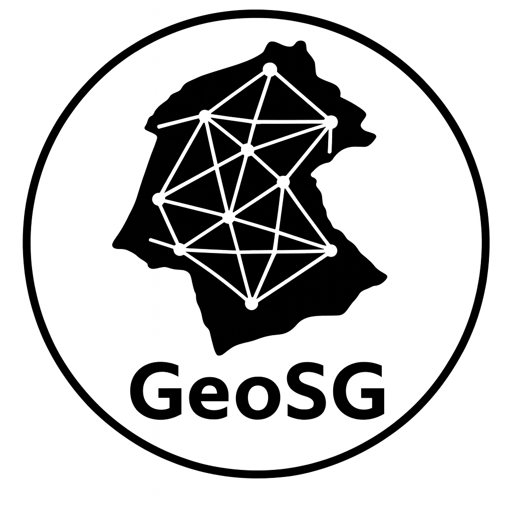

GeoSG

GeoSG is a research and development geoportal designed for the display, management and analysis of spatial data in the area of the cadastral municipality of Slovenj Gradec. The system was developed as part of a master's thesis as a demonstrational WebGIS platform, representing the outcome of research into modern architectural, cartographic and data-driven approaches in the development of web GIS applications.
The geoportal combines interactive cartographic display, editing of spatial entities, communication via REST API, and the integration of open-source GIS technologies into a unified modular architecture. A particular strength of the system lies in connecting cartographic display, attribute data and spatial operations within a single working environment, enabling efficient, transparent and intuitive management of spatial information. Just as many application components collaborate in the operation of the geoportal, the entire system is built on the mutual integration of several open-source technologies that together form a technologically modern, scalable and powerful WebGIS solution.
Technological architecture of the geoportal
The system is based on a multi-tier architecture that includes an Angular user interface, a Django REST application layer, GeoServer for the distribution of spatial data, and a PostgreSQL/PostGIS spatial database. The individual services are organized in Docker containers, which provides a clear separation of responsibilities between components and enables their effective interconnection within a unified and stable WebGIS environment.
Communication between the individual parts of the system takes place via REST API and standard GIS services WMS and WFS, which enable efficient exchange, distribution and display of spatial data. The cartographic display is based on the OpenLayers library, which enables advanced interactions with the map directly in the user interface.
The mutual integration of the technologies used enables the coordinated operation of the cartographic display, server-side data processing and the spatial database, which represents one of the key elements of the geoportal's functionality and enables the establishment of a technologically modern, scalable and powerful WebGIS solution.
Geoportal functionalities
GeoSG enables comprehensive management of spatial data through an interactive web GIS environment that combines cartographic display, attribute data and tools for editing spatial entities into a unified user experience.
The system supports the display, entry, editing and deletion of spatial data for various types of entities, such as parcels, buildings, roads and addresses. Users can create and edit geometries directly on the map using interactive cartographic tools.
The geoportal also enables advanced search, filtering and location of spatial entities, synchronisation of the cartographic display with attribute data, and flexible display of cartographic layers. All changes to entered or edited spatial data are permanently stored in a centralised database, ensuring that information in the system remains up-to-date and consistent. More specifically, the geoportal provides users with the following key functionalities:
- easy browsing of spatial data via interactive cartographic display,
- fast panning, zooming and navigation on the map,
- interactive drawing, editing, visual marking and deletion of spatial objects directly on the map without the use of desktop GIS software,
- support for automatic snapping to existing geometries when drawing and editing spatial objects,
- display of attribute data for selected spatial objects on the map,
- synchronisation of the cartographic display, tables and forms within a unified user environment,
- advanced search, filtering and quick location of parcels, buildings, addresses and other spatial entities,
- automatic adjustment of the display of attribute labels of objects on the map according to the display scale,
- flexible display of cartographic layers with the option to enable and disable individual content views,
- simultaneous display of different cartographic layers for easier spatial analysis,
- automatic switching between different levels of simplified WFS parcel layer geometries based on the current map display scale,
- permanent storage of user-entered and edited spatial data in a centralised database,
- automatic updating of GeoSG WMS cartographic layers based on changes to data in the system,
- support for standard GIS services WMS and WFS and the possibility of using created GeoSG WMS layers in other GIS applications and information systems,
- import and export of spatial data in standard GIS formats for further use in other GIS programs,
- access to the system via a web browser without the need for additional software installation,
- multilingual user interface, informational programme webpage and user manual with support for Slovenian, English and Spanish,
- automatic saving of the selected user interface language and visual theme using browser Local Storage,
- automatic adaptation of the language of the informational webpage and user manual based on the currently selected language of the user environment,
- informational programme webpage and integrated user manual, also optimised for use on mobile devices,
- adaptable visual themes for the user interface and dynamic resizing of individual parts of the user interface,
- display of cursor position coordinates and dynamic adjustment of the graphic scale according to the map zoom level,
- intuitive user interface for easier use even by less experienced users,
- possibility of basic use of the geoportal without logging in,
- use of user accounts and login for access to advanced geoportal functionalities,
- preservation of user login state between page refreshes and return visits to the application without the need to log in again,
- coordinated operation of user login across multiple tabs of the same web browser,
- management of user accounts and access rights based on the role of each user, with the possibility of easy adjustment of permissions through the Django Admin environment by authorised persons.
The geoportal thus enables efficient work with both attribute and geometric data and represents a modern web GIS solution for the management and visualisation of spatial information.
Research aspect of the geoportal
As already mentioned, GeoSG was not developed merely as a demonstrational web GIS system, but also carries research value, as it addresses and analyses various approaches to the development of modern WebGIS solutions. The research was, among other things, directed at comparing different architectural approaches, connecting open-source GIS technologies, and integrating them into a unified, modular and scalable web GIS environment.
Special emphasis in the master's thesis was also placed on researching the simplification of spatial geometries with the aim of improving the performance, clarity and responsiveness of the cartographic display when working with larger quantities of spatial data. In addition, the research component included a comparison of different approaches to implementing Django REST API services and an analysis of their suitability for the development of modern web GIS systems.
The results of the research are directly incorporated into the operation of the geoportal and are partially visible to the user through the specialised cartographic layers "Parcels – simplification analysis" and "Parcels – automatic LOD display", which show different levels of simplified parcel geometries based on the display scale. The research aspect of the Django REST API service implementation is further presented through access to Swagger and Redoc API documentation, available to users in the user manual under the FAQ tab in the "Important links" section. Such direct access to development API documentation in production geoportals is not common, but has been intentionally enabled within GeoSG due to the research and demonstrational nature of the system.
For a more detailed insight into the research approaches, system implementation and research results, you are invited to read the master's thesis, available at: xlinkx
Acknowledgements and academic context
The GeoSG geoportal was developed as a result of knowledge gained during my student exchange at the School of Geodetic, Cartographic and Topographic Engineering at the Universitat Politècnica de València. During my stay at that faculty, I attended the courses Web Development and Geoportals and Geospatial Content Managers and Smart Cities, which significantly broadened and deepened my understanding of modern WebGIS technologies and systems.
Special thanks go to Professor J. Gaspar Mora Navarro, who during my student exchange further inspired my enthusiasm for this field and provided me with the foundational knowledge on which this master's thesis and the development of the GeoSG geoportal are based.
I would like to thank the Faculty of Civil and Geodetic Engineering of the University of Ljubljana for the quality education, solid geodetic and geoinformatics knowledge, and for the support in the preparation of the master's thesis by providing the technical and infrastructural resources needed for the development and hosting of the geoportal.
I sincerely thank my supervisor Jernej Tekavec for his expert guidance and support in carrying out the master's thesis, and my co-supervisor Matija Gerčer for his valuable advice and assistance in better understanding the topics covered.